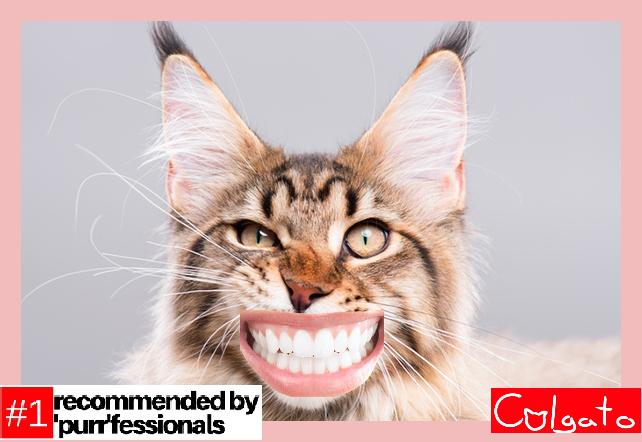
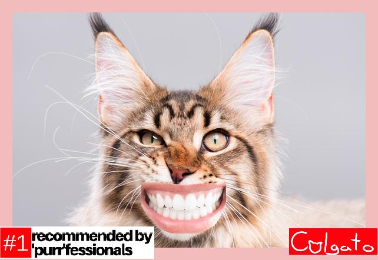

Colgato Ltd. Branding - CSE Python Project - March 21, 2018
 

In this project for Computer Science Engineering, we were put into groups of two to create a Python function that manipulates a folder of images to one of multiple given themes for fictitious clients. Our pair chose the "Product" client, which ordered us to create a function that can be placed on an image to promote their product. The client we came up with was a parodic toothpaste brand called "Colgato." We divided tasks between each other, and had about two and a half weeks to finish the project. I did most of the coding and troubleshooting, though got help documenting and developing our project from my partner. This project was a bit of a leap from the previous ones, as it was very open as to what our final product could be, since the guidelines were vague. With proper planning, however, my partner and I set our goals properly and got our project done by the deadline. All of the primary, and some of the secondary priorities were finished. The project log can be found here.